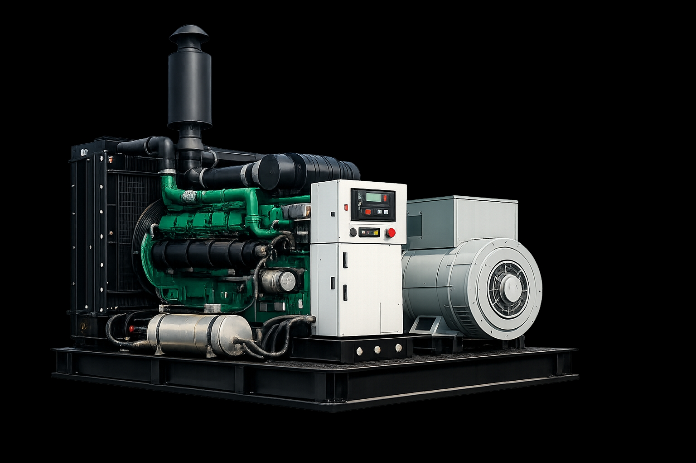
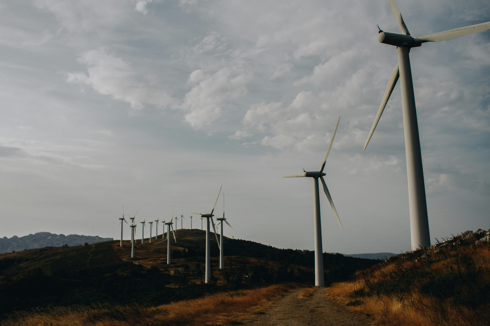
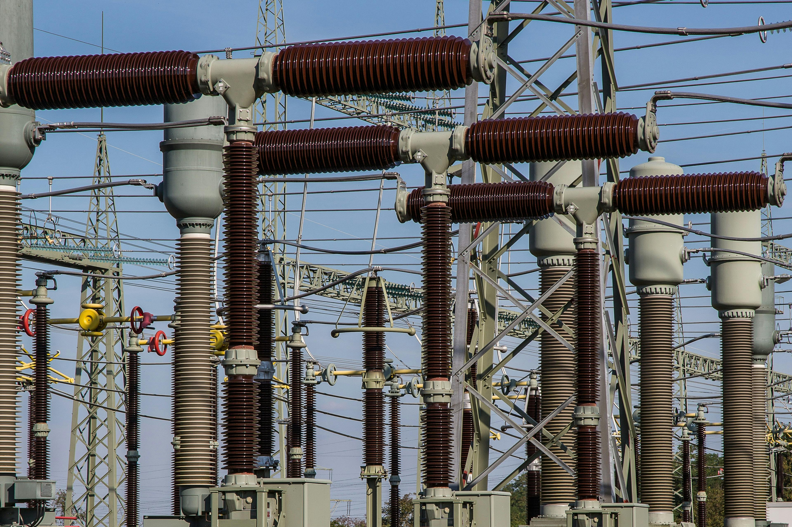

Infrastructure
Machineries

We have installed imported machineries in both the mills which possess the state of the art technology to cater to the needs of the customers in Tamilnadu. Machineries are imported from.. Bhuler, Swiss
Milling Equipments Installed
We have installed the following machines for cleaning of wheat before milling. The wheat is conveyed to the cleaning machines from the bottom floor to the floors on top through elevators..
Magnetic separator:
The wheat is passed through a hopper. On this hopper is a corrugated feed roll which feeds the wheat out of the hopper in a thin stream and runs down over the face plates of the magnet.
The Aspirator:This machine is designed to remove light materials such as light shriveled grains of wheat
Separator:
This machine consists of revolving cylinders covered with perforated metal.. Any material that is too large to pass through the openings is scalped off.
The Scourer:
The scouring of wheat is for the removal of supferflous brewing of and wheat hairs.This material is removed by rubbing action of wheat against wheat .
Wheat Washers:
They consist of a cylinder having a blank wetting section and a perforated whizzer section. A spiral bladed agitator runs the full length of the cylinder.Then water is applied to the wheat as it enters the machine and at a number of places in the cylinder.
Roll Mill(Chinese Machine and Bhuler Swiss):
This machine houses 2 pairs of rolls. In each pair of rolls, one is adjustable allowing the rolls to be drawn closer or forced farther apart.The rolls are made of chill-hardened cast iron.The rolls are used to break open the wheat kernels.The rolls are corrugated on their surface so that as the rolls in a pair turn towards each other ,they unroll the bran coats on the kernel instead of crushing them.
Purifier:
Purification is merely a separation of bran particles from the endosperm .The machine consists of roll feeders leading to suspended sieve. Air enters the machine below the sieve .The reciprocal motion of the inclined sieve moves the stock towards the tail end allowing the air to pass through it.Then the stocks are hoppered down.
Sifters:
Sifters travel in a gyratory manner,making a perfect circle of 2 to 4 inches in diameter. As the stock enters the sifters it falls upon a sieve, the heavier particles work to the bottom of the mass and pass through the openings.While the lighter particles are discharged over the tail end send back to rolls.
Agromatic AG system:
Which is a wheat dampening control system. This equipment was imported from Switzerland. This maintains the accurate moisture in the finished products.
Bin for storing wheat with a capacity of 1600 MT in SMAFPL & SMRFMPL
Godown Capacity
There are 11500 MTS capacity of Godowns in two Companies. SMAFPL got about 7000 MTS and SMRFMPL got about 4500 MTS of storage Godown respectively
Volumetric Feeder Control system controlled by A/C drivers for blending wheat from various hoppers.
Sooji Dryer system which gives a longer shelf life.
Realizing the need for further upgradation the First mill was further revamped now and then with latest state of art equipments like Destoner , Purifier, Rollers, Bins etc. which are imported to produce better quality of products.
Liboratory

The mills are equipped with a full fledged laboratory with high quality laboratory Equipments like Alvograh, Labmill, Moisture Bell, SRC and Gluten washer. The quality is tested every hour to ensure that the products are of high standards before it leaves the Companys’ premises.
Transport
For movement of wheat from Railhead to mills and for delivery of wheat flour, the Company owns a fleet of 15 numbers of Lorries and Vans.
Genset

Electricity

We have an uninterrupted power supply in both SMRFM & SMAF with the installation of three generators having capacity of 500KVA,380 KVA and 200KVA in SMRFMPL and two generators with a capacity of 500KVA,380 KVA in SMAFPL respectively
Electricity

We have a connected load of 650 KVA in SMRFMPL consuming 250000 units per month and A connected load of 600 KVA in SMAFPL consuming 320000 unit per month.
Wind & Solar Power Division
The group has 31 Wind Electric Generators of 10MW installed capacity near yyyyz area of Banglore district. The WEGs helps in generating power and is set off in the EB bill against the power consumed by our mills. The Surplus power generated are sold to other Industries through EB Network Group also entered into power generation through Solar power plant. About 20 MW Solar power plants is erected in Kangeyam & Dindigul area in Tamil Nadu. The Power generated are sold to different Industries through TNEB Network The total turnover of wind & solar comprises of 25 crores Per Year.
Workshop
There is a full fledged workshop and adequate trained personnel are available to maintain the equipments on a regular basis.